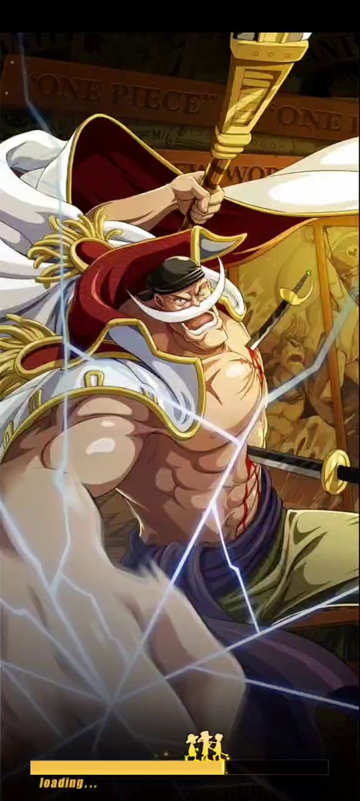
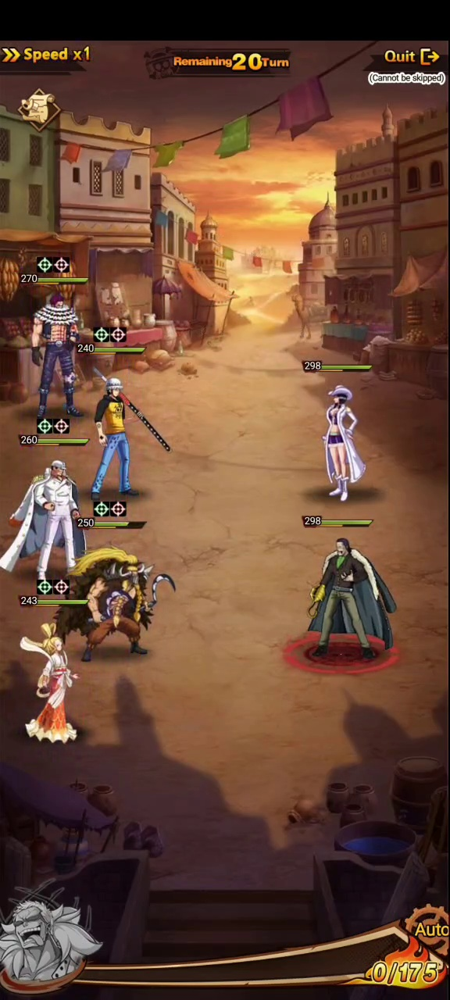
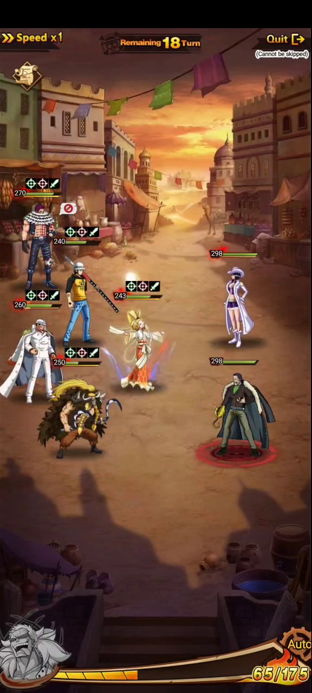
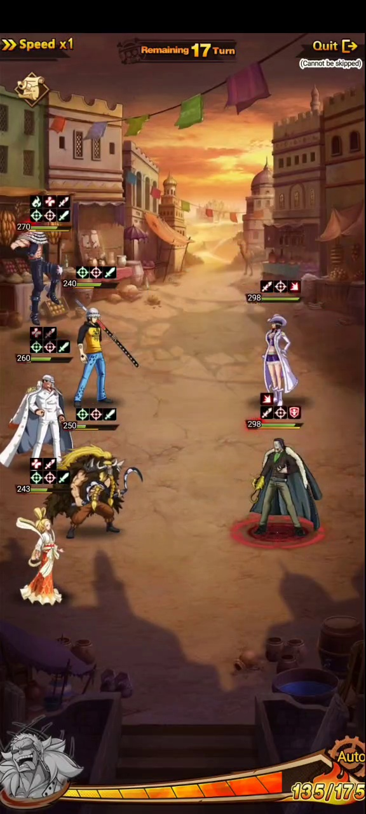
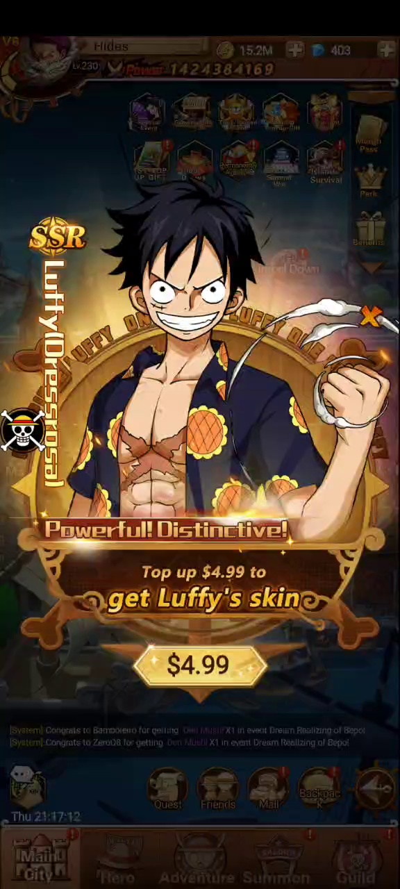
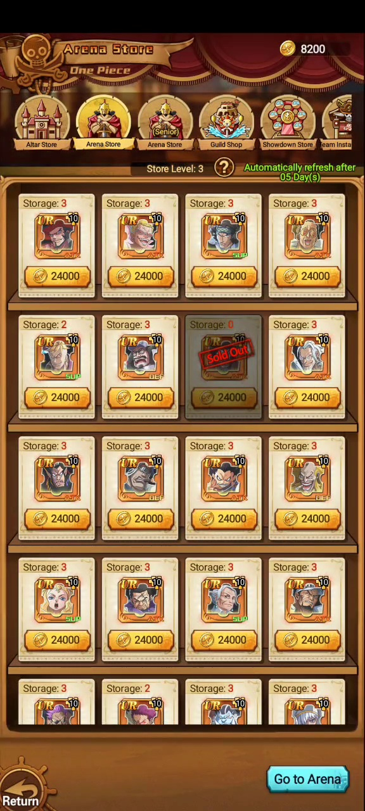
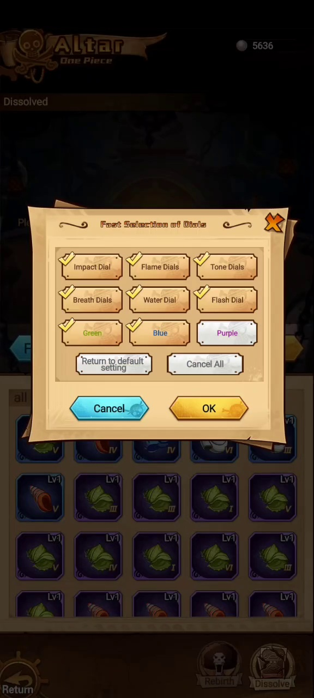

Reproductor
Grabación
Video original guardado solo en local para no hacer pesado el sitio p?blico. La lectura queda documentada con los frames de abajo.
Material fuente
Video agregado como fuente para entender el flujo real del juego: navegación, menús, botones, pantallas intermedias y recompensas.
Reproductor
Frames extraídos





Segundo video
Frames extraídos



Combate
El combate empieza con Remaining 20 Turn y baja durante la pelea.
Se observan 5 unidades aliadas contra 2 enemigos visibles.
Hay Speed x1, Auto, Quit y aviso Cannot be skipped.
El medidor sube de 0/175 a 135/175 durante el video.
Las unidades muestran iconos de buffs y debuffs sobre la barra de vida.
El video termina con una animación especial de Doflamingo.
Tercer video
Frames extraidos



